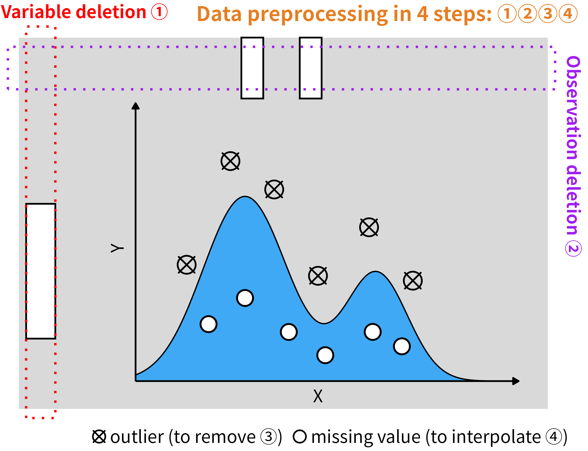
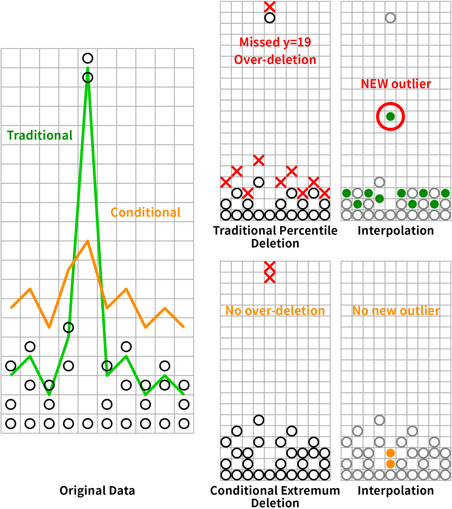

dataprep: design philosophy and preprocessing methodology
Source:vignettes/dataprep-philosophy.Rmd
dataprep-philosophy.RmdThe problem this package solves
Preprocessing high-resolution instrument data is not a pipeline you can assemble from a grab-bag of one-shot functions. The order in which steps are applied, and the physical constraints each step enforces, determine whether the final table is meaningful. A percentile filter applied before gap detection will delete a legitimate extreme before anyone notices it sits in a 6-hour hole. A linear interpolation run before observation deletion will silently blend two physically distinct regimes into a value that does not exist in nature.
dataprep is built around a specific claim: the
reliability of a substituted value is bounded by the time distance to
its nearest observed anchor. Every design decision below
follows from that claim.
The four-step pipeline

The pipeline processes every numeric channel in this fixed order:
-
Variable deletion (
varidele) — drop columns that cannot be reliably interpolated. -
Observation deletion (
obsedele) — drop rows whose remaining gaps are too long to bridge. -
Conditional extremum outlier removal
(
condextr) — remove individual points that lie outside the local distribution. -
Short-period grouping interpolation
(
shorvalu) — fill the remaining gaps, but only within short segments.
All four steps are wrapped by dataprep() for one-call
use:
varidele() → obsedele() → condextr() → shorvalu()Steps 2 and 3 are re-applied in alternating rounds
(interval rounds of marking, then one round of deletion,
repeated times times). The reasoning behind the ordering is
in the sections below.
Variable deletion: three principles
The variable-deletion step is not a simple “drop columns with too
many NAs” filter. Three criteria must be reconciled:
1. Signal-to-noise ratio as the primary threshold
A size bin carries information only if it has enough observations to
support a reliable signal-to-noise estimate. A column that is missing
more than fraction of the time cannot support such an
estimate, and varidele() removes it before downstream steps
have to waste effort on it. The default fraction = 0.25
reflects the empirical observation that a channel missing a quarter of
its samples has a noise floor comparable to its signal.
2. Physical relevance
Not every channel that passes the NA filter is worth
keeping. In size-resolved aerosol data, a channel dominated by inlet
transmission cutoffs or near-zero counts contributes noise, not signal.
varidele() handles the missing-fraction case; the companion
functions filter_low_var(), filter_high_cor(),
and phys_filter() handle the physical and statistical cases
that varidele() cannot. Together they cover variable
selection as a whole.
3. Missing-run length, not just missing fraction
A channel with 5% missing data scattered as isolated points is
perfectly usable. A channel with 5% missing data clustered into one
four-hour gap is not — after deletion and interpolation, that channel
contributes one long unanchored stretch to the pipeline.
varidele() measures the missing fraction, but the actual
decision is enforced by obsedele() on run length
rather than on fraction. Variable deletion exists so that a
column that cannot pass the run-length criterion does not silently lower
the quality of the interpolation step.
Observation deletion: two principles
obsedele() removes rows, but the physical motivation is
the same as for variable deletion: a value can only be reliably
interpolated if there is an observed anchor close enough to support
it.
1. Detect the pattern, don’t filter the points
The step does not ask “does this value look like an outlier?” It asks
“does this row have a trustworthy anchor within half
minutes on at least one side, in every selected column?” A row
fails this test if any selected column has a missing run longer
than half minutes on both sides. This is a structural
check, not a value-based one — outliers are handled by the next
step.
2. The half-hour window is the physical mixing time
Why half = 30 minutes? For well-mixed aerosol near the
surface, a half-hour is short enough that the surrounding observations
still describe the same air mass; longer than that, and two sides of the
gap can belong to different emissions regimes or different boundary
layer states. The window is implemented symmetrically:
both sides of the gap must be longer than half minutes for
the row to be deleted. If a valid anchor exists on either side within
half, the row is retained.
How it is implemented: anchor-based scan
The 0.1.7 C++ backend (obsedele_cpp) implements the
criterion directly, with an anchor-based scan. The algorithm for one
subset (a group, or a time period between two gaps) and
one column is:
Walk the subset in chronological order. Record the position of every non-missing value; these are the anchors.
-
For every missing value, compute two numbers:
-
dl— the time distance to the nearest anchor on the left, -
dr— the time distance to the nearest anchor on the right.
-
Delete the row only if
dl > half_secondsanddr > half_seconds.
If a side has no anchor at all (the run touches the subset boundary),
the corresponding distance is +Inf, so a row at the series
boundary is deleted only when the surviving side is also beyond
half.
This is mathematically identical to the running-mean criterion used in earlier releases, but the algorithm has three practical advantages:
O(n)time,O(1)extra allocation per column. The 0.1.5 grid expansion allocated anL-point vector per subset, whereLis the number of grid points, not the number of observations. For 10-minute sampling on a 1-minute grid,Lis roughly 10× the observation count. The anchor scan never materialises a grid.Runs at full memory bandwidth. Both the anchor list and the per-row distance computation are simple sequential scans over a single column. This is what allows the 0.1.7 implementation to process the full year of SMEAR I Varrio data (49,422 rows × 61 channels) in 0.05 s on Ubuntu 25.10, against 11.6 s in 0.1.5, and in 0.035 s against 22.5 s on Windows 11 Pro for Workstations.
Scales linearly with column count. Each column is processed independently, so the loop parallelises over columns with OpenMP without any shared mutable state.
Implementation evolution
The retention criterion has been stable across releases, but the implementation has improved steadily. The table below summarises the three generations:
| Release | Strategy | Complexity |
|---|---|---|
| 0.1.0 | Borrowed running mean: expand the series onto a regular grid with
tidyr::complete(), compute a 59-minute centred moving
average on a temporary column, and use its emptiness pattern to flag
long runs. |
O(grid length) per subset |
| 0.1.5 | Run-length encoding: use data.table::rleid() and
rowid() to collapse consecutive NAs into runs,
then compare each run length to the number of grid points covered by
half minutes. |
O(n) time, O(n) temporary storage |
| 0.1.7 | Anchor scan: for each missing value, look up the nearest non-missing anchor on each side and compare the two time distances directly. No grid, no run-length state. |
O(n) time, O(1) extra allocation per
column |
Each generation produces the same deletion decision on the same input, but the constant factors shrink. The 0.1.7 anchor scan is the first version that is fast enough to run interactively on full-year data.
Why “both sides” and not “one side”?
A one-sided criterion would delete rows at the boundary of every run,
even when the surviving side has a valid anchor right next to the row.
The 0.1.5 implementation effectively did this by merging columns before
computing runs, which over-deleted boundary rows. The 0.1.7 rewrite
scans each column independently and requires both distances to
exceed half before deletion. See
vignette("dataprep-migration") for the full upgrade
guide.
Subsets: group and period
The anchor scan is applied per subset. A subset is one of two things, depending on the input:
- If a
groupcolumn is provided, each group is a subset. - Otherwise, the timeline is split into periods separated by gaps
longer than
threshold_sec(defaulthalf × 60seconds). Repeated timestamps stay in the same period.
Subsets matter because the retention criterion is local: a row at the end of one period must not be evaluated against an anchor that lies on the other side of a long intra-day gap.
Re-applied after outlier deletion
Observation deletion is applied twice in the
pipeline: once before outlier removal and once after. This is not a bug.
Removing outliers converts values to NA, which can create
new long NA runs that did not exist in the original data.
The second pass catches these. Without the re-application, the
interpolation step would silently extend across gaps that only appeared
after outlier removal.
Outlier removal: two principles

1. Per-point decisions, not one-shot thresholds
The default condextr method does not delete every value
above the 99.5th percentile. It judges each candidate in context: the
current extreme point is compared against a threshold built from a high
percentile, an error margin (top.error,
bottom.error), and a magnitude margin
(top.magnitude, bottom.magnitude). A value
that is a global maximum but sits well within the local distribution of
a two-modal series is retained; a value that is locally extreme is
removed even if it is not globally extreme.
This is closer to a semi-supervised decision rule than to an
unsupervised cutoff. The comparison against percoutl — the
traditional percentile method — is shown in the figure above. The
traditional rule clips legitimate values at both ends of the
distribution and then produces new outliers at the boundary between
observed and interpolated points. The conditional-extremum rule removes
only the extreme point of each window and leaves no artificial outlier
behind.
2. Outlier deletion inherits the gap-length constraint
Every value removed by condextr becomes an
NA. If a column had a short NA run before
outlier removal, and outlier removal punches holes through the interior
of the series, the resulting NA run can be much longer than
the original. This is why obsedele is re-applied
immediately after condextr in every round of the
condextr loop.
The loop structure is:
for round in 1..times:
for i in 1..interval:
mark outliers in every column
delete observations whose NA runs now exceed halfinterval controls how aggressively condextr
marks points between two observation-deletion rounds; times
controls how many rounds the loop runs. Both are exposed as arguments in
dataprep() and can be tuned by optisolu() when
a ground-truth-like reference (percoutl) is available.
Missing-value interpolation: two principles

1. Vertical, not horizontal
The most important design decision in the interpolation step is that
shorvalu() interpolates within a column along
time, never across columns at the same time point.
The reason is physical. Size-resolved aerosol measurements are strongly non-stationary in the size dimension: a nucleation burst shifts the entire distribution toward small diameters for an hour or two, then decays. Interpolating a missing value in the 7.94 nm channel from its neighbours in the 6.31 and 8.91 nm channels silently assumes that the shape of the distribution is constant over the gap — an assumption that fails exactly when the measurement matters. Horizontal interpolation therefore tends to create new outliers at the segment boundaries, which are then flagged as outliers by the next round and deleted, in a cycle that silently erodes the sample size.
Vertical interpolation uses only observations of the same physical quantity. It has no hidden stationarity assumption beyond the local one enforced by the half-hour window.
2. Segment the series before interpolating
Naive time-series interpolation runs a continuous interpolator across the entire gap, no matter how long it is. This silently mixes two physically distinct regimes and produces values that do not exist in nature — a smoothed average of two different air masses, attributed to a time point that belonged to neither.
shorvalu() splits each series into short segments
separated by gaps longer than intervals minutes, and
interpolates within each segment independently. The right panel of the
figure above shows the result: the interpolated values (orange) are
drawn from the segment’s own anchors, not from across the gap. The
middle panel shows the naive alternative, where the interpolation
contaminates the whole gap.
This internal segmentation does not depend on the upstream cleaning
step. Even if obsedele() were skipped entirely,
shorvalu() would still cut the series at every long gap and
interpolate within each segment only. The two mechanisms are
complementary, not redundant:
Upstream cleaning (
obsedele) is a preventive measure. It removes rows with longNAruns, which reduces the number of segmentsshorvalu()has to handle and preserves more sample rows on the “keep” side of the trade-off.Internal segmentation (
shorvalu) is a defensive measure. It guarantees correctness at the function level, regardless of what the caller did before.
This is what “short-period grouping interpolation” means: interpolation is applied only where the value can be read from a nearby observation in the same segment.
Why this order, and not any other
| Order | Consequence |
|---|---|
shorvalu before obsedele
|
Interpolation crosses long gaps; new outliers appear at segment boundaries. |
condextr before varidele
|
Outliers are detected within columns that will later be dropped; wasted effort, and parameters tuned against the wrong sample. |
obsedele before condextr
|
Correct: anchors are guaranteed before outlier
decisions, so condextr judges each candidate against a
meaningful local distribution. |
One pass of obsedele only |
NA runs created by outlier removal are not detected;
shorvalu silently extends across gaps that did not exist in
the input. |
| Horizontal interpolation | Creates new outliers at every gap; the next round of outlier detection deletes them, eroding the sample. |
The fixed order is varidele → (obsedele →
condextr) × times → shorvalu.
Every wrapper in the package respects this order:
-
prep_fit()andprep_transform()enforce it across train/test splits. -
dataprep()chains all four steps for one-call use. -
dry_run()reports the effect of each step without modifying the caller’s data.
Evaluation metrics
The pipeline is a constraint-satisfaction procedure with four
measurable outcomes. Every parameter choice in dataprep()
and optisolu() is judged against these:
Number of values deleted
The total count of values set to NA by
varidele, obsedele, and condextr,
in units of original observations. dry_run() reports
na_before, na_after, and the difference for
each step.
Sample retention
The number of rows that survive the cleaning pipeline, divided by the input row count. On the SMEAR I Varrio 2025 full-year dataset this is 46,063 / 49,422 ≈ 93.2% after the default settings.
Residual outliers
Values that survive the pipeline and are still outliers by any
external criterion. optisolu() uses percoutl
as the reference: a candidate parameter combination is considered
“better” only if it produces strictly fewer residual outliers than the
traditional method at the same outlier-removal ratio.
Newly created outliers
Values that did not exist in the input but appear in the output as a
direct consequence of an earlier step (interpolation, imputation, or
scaling). This is the metric on which horizontal interpolation fails
most visibly; it is one of the reasons shorvalu is
restricted to vertical, short-period interpolation.
Uncertainty analysis
For each output column, the standard deviation of the cleaned series
is compared against (a) the input series, and (b) the output of the
previous release. A large change in standard deviation indicates that a
step has shifted the distribution rather than merely denoising it, and
is a signal to re-examine the parameter choices. optisolu()
exposes this comparison through the snr column of its
return value.
The package beyond the four steps
The four-step pipeline is the core of dataprep, but the
package ships a wider toolkit. Every function operates on a data frame
(or matrix, or plain vector where it makes sense), follows a consistent
argument convention (data, cols,
group, verbose), and is implemented either in
C++ or in R on top of a small set of shared helpers
(resolve_numeric_cols(), to_numeric_matrix(),
check_numeric_cols()). This is what makes the package
usable as a general-purpose data-frame preprocessing layer, not just a
specialist tool for one dataset.
The helper families are:
Cleaning —
varidele,obsedele,condextr,percoutl,detect_outliers,winsorize,phys_filter,filter_high_cor,filter_low_var,deduplicate,validate_data,balance_panel.Missing values —
na_diagnose,impute_missing,shorvalu.Transformation —
transform_data,log_returns,bin_data,encode_categorical,zerona.Time series —
create_lags,roll_apply,resample_time,detrend_ts,remove_diurnal_cycle,decompose_ts,drift_detect,day_night_flag,season_flag.Reshaping —
melt,dcast.Reporting and workflow —
descdata,descplot,percdata,percplot,data_report,dry_run,prep_fit,prep_transform,sample_data.
Each function is documented on its own help page. This vignette explains why the pipeline has the shape it does; the help pages explain how each function is called.
Related documentation
Cleaning pipeline walkthrough —
vignette("dataprep-cleaning"). Step-by-step execution on a real dataset.Performance and cross-engine consistency —
vignette("dataprep-performance"). Benchmark tables and 8-engine consistency checks.Upgrading from 0.1.5 to 0.1.7 —
vignette("dataprep-migration"). Behaviour changes and the migration checklist.Leakage-free workflow —
vignette("dataprep-workflow").prep_fit()/prep_transform()in practice.Fast reshaping —
vignette("dataprep-melt-dcast").
Session info
sessionInfo()
#> R version 4.6.1 (2026-06-24)
#> Platform: x86_64-pc-linux-gnu
#> Running under: Ubuntu 24.04.5 LTS
#>
#> Matrix products: default
#> BLAS: /usr/lib/x86_64-linux-gnu/openblas-pthread/libblas.so.3
#> LAPACK: /usr/lib/x86_64-linux-gnu/openblas-pthread/libopenblasp-r0.3.26.so; LAPACK version 3.12.0
#>
#> locale:
#> [1] LC_CTYPE=C.UTF-8 LC_NUMERIC=C LC_TIME=C.UTF-8
#> [4] LC_COLLATE=C.UTF-8 LC_MONETARY=C.UTF-8 LC_MESSAGES=C.UTF-8
#> [7] LC_PAPER=C.UTF-8 LC_NAME=C LC_ADDRESS=C
#> [10] LC_TELEPHONE=C LC_MEASUREMENT=C.UTF-8 LC_IDENTIFICATION=C
#>
#> time zone: UTC
#> tzcode source: system (glibc)
#>
#> attached base packages:
#> [1] stats graphics grDevices utils datasets methods base
#>
#> other attached packages:
#> [1] dataprep_0.1.7
#>
#> loaded via a namespace (and not attached):
#> [1] digest_0.6.39 desc_1.4.3 R6_2.6.1 fastmap_1.2.0
#> [5] xfun_0.61 cachem_1.1.0 parallel_4.6.1 knitr_1.52
#> [9] htmltools_0.5.9 rmarkdown_2.32 lifecycle_1.0.5 cli_3.6.6
#> [13] sass_0.4.10 pkgdown_2.2.1 textshaping_1.0.5 jquerylib_0.1.4
#> [17] systemfonts_1.3.2 compiler_4.6.1 tools_4.6.1 ragg_1.5.2
#> [21] bslib_0.12.0 evaluate_1.0.5 Rcpp_1.1.2 yaml_2.3.12
#> [25] otel_0.2.0 jsonlite_2.0.0 rlang_1.3.0 fs_2.1.0